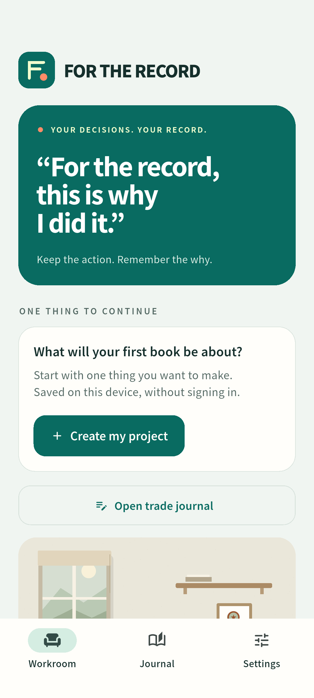

Make room for one thing.
Name a project and set a small intention. Start without creating an account.
 FOR THE RECORD
FOR THE RECORD“For the record,
this is why I did it.”
Your wallet keeps the transaction. Keep the reason, the plan, and what you’ll check next. A private work journal helps you follow through.
Development preview · Android 8+ · ARM64
Private notes work offline. Read-only wallet history uses free public RPC.

KEEP THE WHY.Name a project and set a small intention. Start without creating an account.
Finish with what changed, what got stuck and the next step. Progress does not have to be perfect.
Your next action waits on the home screen. Your reasons stay in your project book.
Actual Android interaction, from an intention to a saved next step. The trade reflection segment is persistently labeled sample data. It is not evidence of a live mainnet trade or a physical Seeker test.
The Android ARM64 APK is available as a direct GitHub release download. English submission materials are available here. The source and full commit history are public on GitHub.
Projects, focus sessions, outcomes, next actions, local storage, JSON export and eight UI languages. Read-only MWA authorization and direct Solana public RPC do not require Firebase billing. Only confidently identified Jupiter v6 swaps using classic SPL tokens can start a trade journal; unsupported and ambiguous events remain read-only. Public RPC is best-effort; physical Seeker verification remains a release gate. Shared rooms, SGT verification and SKR purchases are optional server features and are hidden in this edition.
English is the default. Choose 한국어, 日本語, 简体中文, हिन्दी, Español, Português or Français in Settings. Your own writing is never translated.
Work notes and trade reflections stay in local SQLite storage. They are not automatically uploaded. Export before uninstalling; automatic backup and one-tap restore are not provided.
Connecting a wallet sends its public address and transaction IDs directly to Solana public RPC. Notes and project names stay on this device. The default read-only journal requests no message signatures, transaction signatures or transfers. Public RPC can be unavailable or rate-limited. Disconnecting does not erase saved notes.
Preview package: app.workroom.seeker_workroom. Development certificate, not a production signing key. For preview support, contact the person who provided your APK. The final operator, support contact and retention policy must be confirmed before public store release.